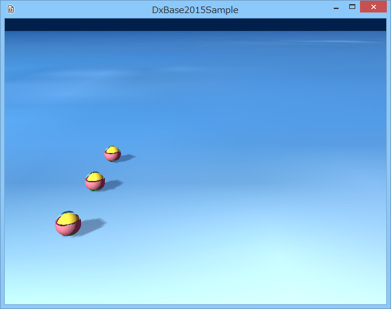

図1002a
このサンプルは、回転と移動の連続動作を登録しています。
//--------------------------------------------------------------------------------------
// class ActionObject : public GameObject;
// 用途: アクションする配置オブジェクト
//--------------------------------------------------------------------------------------
class ActionObject : public GameObject{
Vector3 m_StartPos;
public:
//構築と破棄
ActionObject(const shared_ptr<Stage>& StagePtr, const Vector3& StartPos);
virtual ~ActionObject();
//初期化
virtual void Create() override;
};
//初期化
void ActionObject::Create(){
//中略
//アクションの登録
auto PtrAction = AddComponent<Action>();
PtrAction->AddRotateBy(1.0f, Vector3(0, XM_PI, 0));
PtrAction->AddMoveBy(1.0f, Vector3(2.0f, 0, 0));
PtrAction->AddMoveBy(0.5f, Vector3(0, 1.0f, -1.0f),
Lerp::Linear, Lerp::EaseOut, Lerp::Linear);
PtrAction->AddMoveBy(0.5f, Vector3(0, -1.0f, -1.0f),
Lerp::Linear, Lerp::Easein, Lerp::Linear);
PtrAction->AddMoveBy(2.0f, Vector3(-4.0f, 0, 0));
PtrAction->AddMoveBy(1.0f, Vector3(0, 0, 2.0f));
PtrAction->AddMoveBy(1.0f, Vector3(2.0f, 0, 0));
//ループする
PtrAction->SetLooped(true);
//アクション開始
PtrAction->Run();
//中略
}
PtrAction->AddRotateBy(1.0f, Vector3(0, XM_PI, 0));
PtrAction->AddRotateInterval(5.0f);
PtrAction->AddMoveBy(0.5f, Vector3(0, 1.0f, -1.0f),
Lerp::Linear, Lerp::EaseOut, Lerp::Linear);
PtrAction->AddMoveBy(0.5f, Vector3(0, -1.0f, -1.0f),
Lerp::Linear, Lerp::Easein, Lerp::Linear);